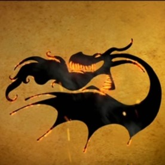

Classe Brasa
- Cospem Fogo
- Podem atear fogo ao próprio corpo
mas... o que são classes de dragões, e de que dragões estamos falando?
Para deixar claro, este site tem como propósito te ensinar sobre
as classes e os principais dragões do universo de 'Como Treinar O Seu Dragão'.
Iremos documentar e explicar todas as classes, e listar os principais dragões
de caa classe. E afinal, as classes são uma forma de classificar as milhares de
espécies de dragões com base em características semelhantes.
com tudo explicado, vamos lá!